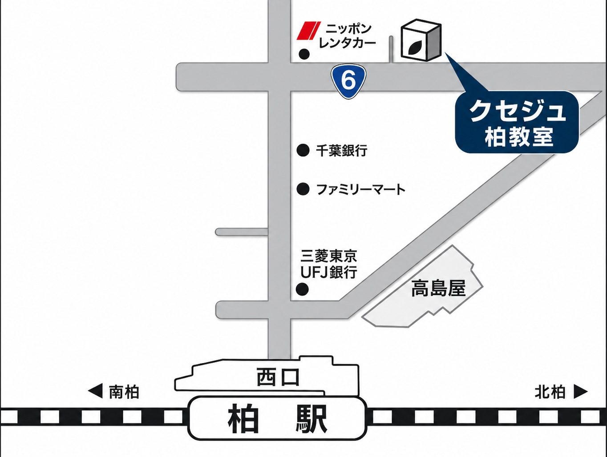
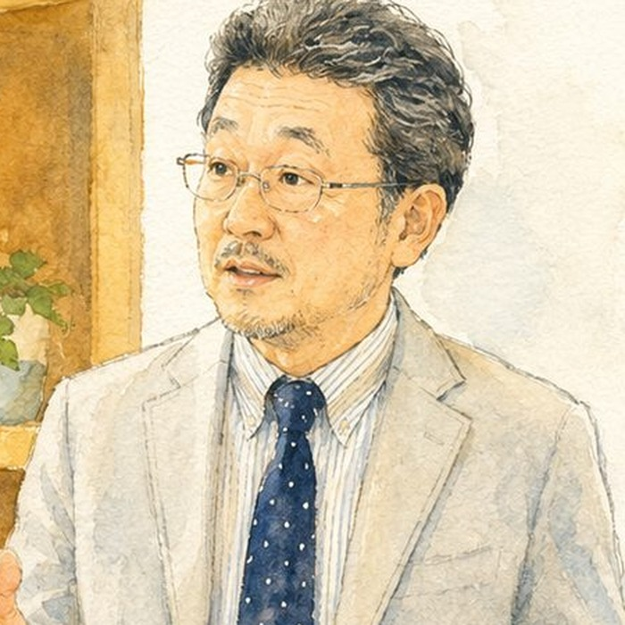

親学2026
KASHIWA CHIBA ・ 2026.10.18 & 11.29 SUN
常識を手放すと、
子どもは伸びはじめる。
教育研究所ARCS代表・管野淳一が、40年の現場経験から語ります。世の中で「正しい」とされている子育ての作法を、いちど疑ってみる。よかれと思って続けてきたことを、いったん棚に置いてみる。そこから見えてくるものを、二回にわたってお話しします。
「いい親」をやめると、子どもは伸びる
熱心な親ほど陥りやすい関わり方を、ひとつずつ分解していきます。手放してよいもの、手放すべきものはどこにあるのか。良かれと思って続けてきたことを、いったん棚に置いてみる時間です。
「勉強しなさい」が効かない理由
やる気は、促して出るものではありません。条件が揃ったときに、ひとりでに生まれるものです。その仕組みを解きほぐし、家庭で今日から変えられることを具体的にお伝えします。
全2回の構成ですが、各回だけのご参加も歓迎します。
- 日 程
- 2026年10月18日（日）14:00 — 15:45
2026年11月29日（日）14:00 — 15:45開場は各回13:45を予定しています。 - 会 場
- 塾クセジュ柏教室千葉県柏市明原2-6-1
- 対 象
- 小学生〜高校生のお子様をお持ちの保護者の方
- 参加費
- 無 料
- 定 員
- 先着順席に限りがございます。定員になり次第、受付を終了いたします。
- 申込〆切
- 各回の開催日の10日前
- 主 催
- 一般社団法人 教育研究所ARCS
- お問い合わせ
- sdn@arcs-edu.com

塾クセジュ柏教室
千葉県柏市明原2-6-1
JR常磐線・東武アーバンパークライン 柏駅 西口より
柏駅西口を出て、国道6号方面へ。ニッポンレンタカーの先です。
お車でお越しの場合は、近隣のコインパーキングをご利用ください。
下のフォームに必要事項をご記入のうえ、送信してください。折り返し、確認のメールを自動でお送りします。ご記入いただいた情報は、本講座の運営に関するご連絡のためにのみ使用いたします。
パソコンでご覧の方は、QRコードをスマートフォンで読み取ると、お手元でご記入いただけます。
フォームが表示されない場合は、こちらのページからお申し込みください。

管野 淳一かんの じゅんいち
一般社団法人 教育研究所ARCS 代表理事
高校教師、塾講師を経て、1984年に塾クセジュを創立。千葉県東葛地域を中心に6教室・生徒数およそ1000名の進学塾へと育てる。2014年、「地域の教育力向上」と「親の意識改革」を目指して教育研究所ARCSを設立。
市教育アドバイザー、学校コンサルタントを務める一方、親のための講座「親学」、お母さんのための「母親塾」を各地で開催。YouTube「KSチャンネル」配信中。著書に『中学受験が子どもをダメにする』（幻冬舎）。読売新聞、週刊朝日ほかに記事掲載。